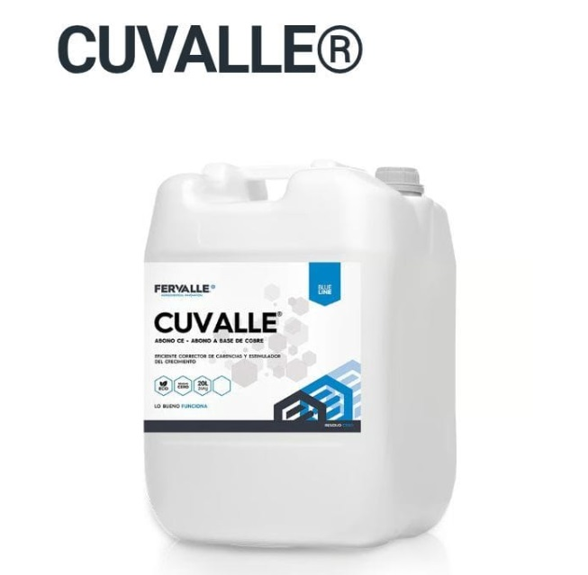

01Cuvalle
Fertilizante ecológico enriquecido con cobre, magnesio, zinc y microelementos.
¡Nutrición completa y natural para tus cultivos!
Fertilizante ecológico diseñado para apoyar diferentes procesos fisiológicos de la planta.
Beneficios:
- Estimula la síntesis de moléculas orgánicas.
- Impulsa el crecimiento y desarrollo de la planta.
- Mejora el transporte de agua y nutrientes.
- Fortalece la resistencia frente a microorganismos.
Ideal para cultivos saludables, resistentes y productivos.